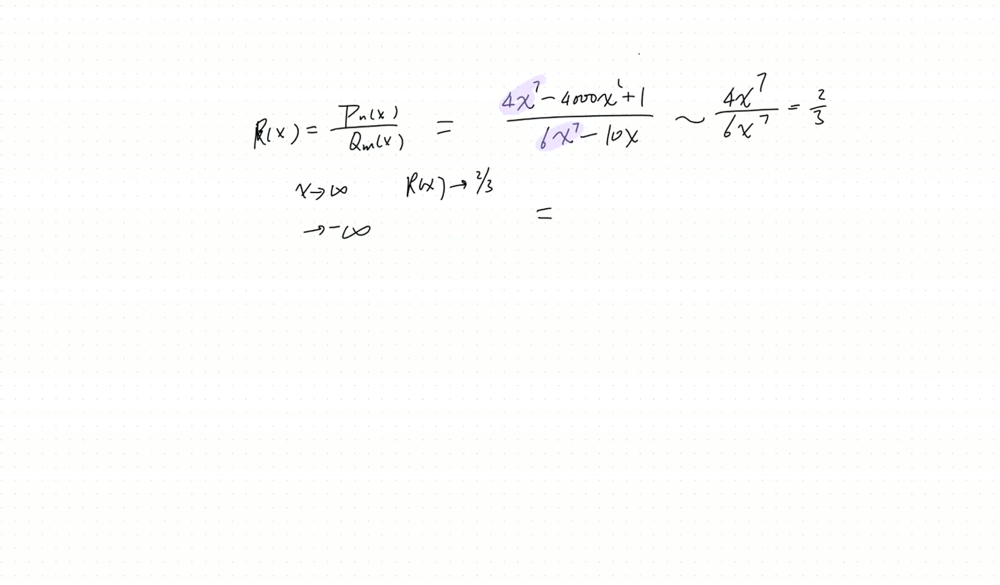
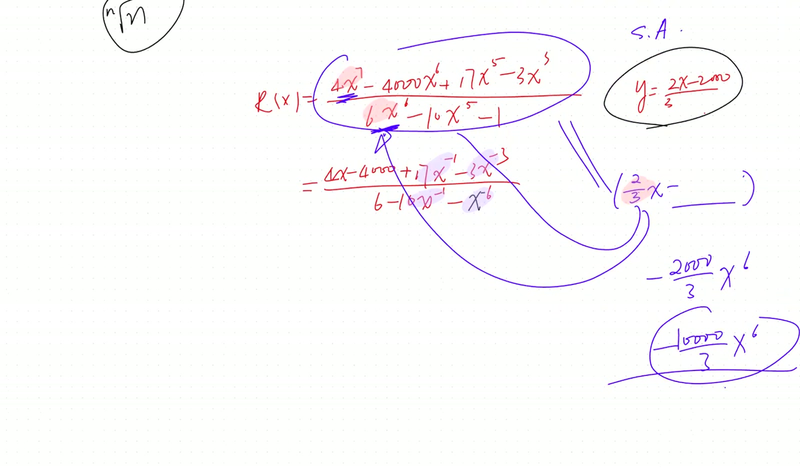
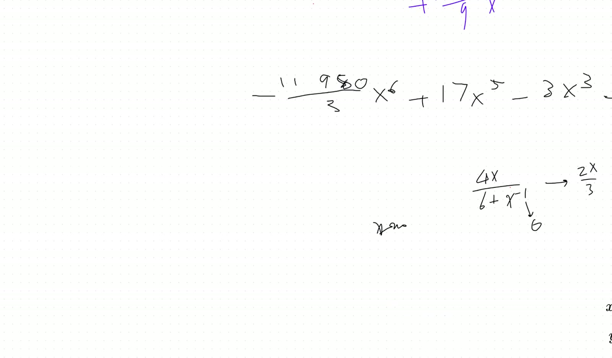
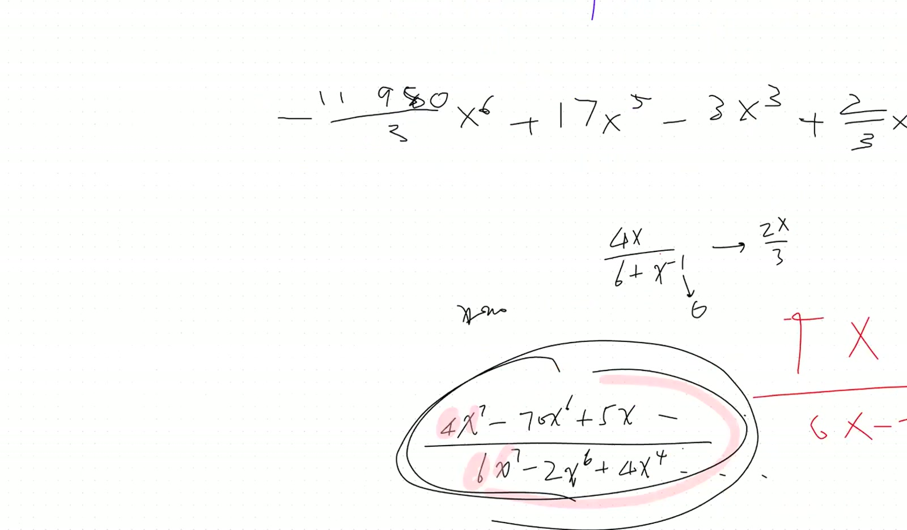

Asymptotic Analysis: When to Drop Infinitesimal Terms
Lead
Reviews horizontal vs slant asymptotes for rational functions, then articulates the general principle distinguishing when infinitesimal terms can be discarded (limit is a number) from when they cannot (limit is a function — slant asymptote requires keeping more terms). Teacher’s repeated frustration with students mechanically applying polynomial-specific rules instead of the general “what counts as small enough” philosophy.
Theorems
(Horizontal asymptote). For \(R(x) = p(x)/q(x)\) with \(\deg p = \deg q\): \[ \lim_{|x|\to\infty} R(x) = \frac{\text{leading coef of }p}{\text{leading coef of }q}. \tag{79} \] If \(\deg p < \deg q\), the limit is \(0\).
(Slant asymptote — keep more terms). For \(\deg p = \deg q + 1\), long-divide \(p \div q\) to get \(R(x) = Q(x) + r(x)/q(x)\) with \(\deg Q = 1\). The slant asymptote is \(y = Q(x)\). Cannot simply drop sub-leading numerator terms (as one would for a horizontal-asymptote computation) — the linear coefficient of \(Q\) depends on them. \(\tag{80}\)
(General infinitesimal principle). When computing \(\lim_{x \to a} f(x)\):
- If the limit is a number, drop terms that go to zero in the limit.
- If the limit is a function of \(x\) (asymptote), drop only terms that go to zero uniformly relative to the asymptote’s leading order.
The distinction: \(1/x \to 0\) as \(x \to \infty\), but \(x \cdot (1/x) = 1 \ne 0\), so \(1/x\) cannot be dropped if multiplied by a growing factor.
Verification audit
- Horizontal asymptote \(R(x) = (2x^2 + 3x + 1)/(x^2 - 5)\). Leading coefficients \(2/1 = 2\). ✓
- Slant \(R(x) = (x^2 + 3x + 1)/(x - 1)\). Long-divide: \(R = x + 4 + 5/(x-1)\). Slant \(y = x + 4\). Dropping \(3x\) from numerator before long division would give \(y = x + 0\), wrong by 4. ✓ Demonstrates why sub-leading terms matter for slant asymptotes.
- General principle worked example. \(\lim_{x\to\infty} (x^2 + x)/(x + 1) = ?\) Long-divide: \(= x + 0 + 0/(x+1) = x\). The slant asymptote is \(y = x\) (function, not number). Dropping the “\(+x\)” from numerator before division would give \(\lim x^2/(x+1) = x\) — coincidentally correct here, but pure luck. The principled approach is to long-divide.
Lecture video
Key frames




Fragility summary
- Heuristic limit. “Drop terms that go to zero” only works when the answer is a number. For asymptotes the answer is a function, and uniformity of vanishing matters.
- Long division is the safe path. Always works; the heuristic shortcuts are tempting but error-prone.
- Confidence. All three theorems: high (calculus-level standard).
Full transcript
On your recording, and let me do a quick recap. We figured out what's going on when we solve a quadratic equation. You've got alternative, different answers for the solution to the alpha beta, or the coefficients when you factor them into quadratics. And we demonstrated into understanding that given the four roots, now there are different ways to combine them into two different quadratics. No wonder you would have alternative answers to your alpha and beta.Now, finally, if you guys don't have any issues with homework, well, I'm not hypo hypothesizing that you can't. Okay, if you do, this is the time to ask. And then we're gonna actually move on to our next unit. Now we go from a polynomial, how to solve them. Remember, we took an excursion from the complex numbers, and someday we're going to return to complex numbers and do a bit more about their ingenious applications. But now, since we're on the trajectory toDeal with this algebra topics. Yeah, I want to continue to cover up to the level of a pre-calculus. Because next year we're going to start calculus now, and all of what we're doing now would be pertinent. So let me quickly recap any questions so far concerning behavior of polynomials. How do we achieve symmetry by completing the square, completing the cube, even completing a quadratic, which not necessarily give you the symmetry becauseQuadratic is not necessarily by a shift a even or odd function anymore, and it does not have an axis symmetrical axis. But nevertheless, it gives us convenience when you have a degenerate quadratic equation to do to to find the roots. Okay, so we handled polynomials, and before that, we handled briefly conic section, how to do rotation, how to find that their orientations, and now next step, we're gonna actually learn how to graph.Rational functions， meaning we will begin to divide the polynomials by polynomials now to do a rational function R x， and which is going to be a polynomial p divided by another another polynomial。 and their graphs， their behavior。 So far， any question from homework and from what we've been doing？Anything? No, we're positive, huh? All right, well, let's go forward. Well, and we we have a fundamental sense of what's going to happen to the polynomial over polynomial. In the first fifteen minutes, it's roughly review, just to bring everything back to your mind. Now, we do know immediately for polynomial, the greatest the leading power would be.The predominant numerical term here when x is approaching infinity, or power infinity, or negative infinity. So to begin with, if you have two polynomials, I want to look at the bulk figure asymptotic one, meaning what happens when x is approaching power negative infinity. Then let me give you several scenarios. Scenario number one, let's just say this is a four of the x to the seventh power minus four thousand of the x squared plus a one dividedAdded by six x to the seventh power minus ten x. What's going to happen when x is approaching positive or negative infinity? Let's separate them. Toby, go ahead. No, actually, this is review, and I want to wait for a second to give other kids a chance. Toby, would you? When x is approaching positive infinity or negative infinity, what happened to that rational function?
请，请。 Elaine。You want to capture the large figure. Go ahead. Uh, as x approaches infinity, the denominator will also go to uh, the numerator will also go to infinity. But until that's the denominator, you're right. And the denominator will also go to infinity. Correct, but we're comparing them. Uh, but the denominator will eventually get, uh, uh.It will be smaller than, no, it will be bigger than the numerator because uh the numerator has the minus four thousand x squared, which is a higher power than negative ten x. Okay, but what would be the bulk figure, the term that actually matters? Roughly speaking, if you pick out the predominant terms to represent the numerator and the denominator, what powers would you take?The x to the seven， yeah， indeed， these are the determining powers now. So， what's going to happen as we talk about it? We approach one。Approach one. Why does that approach one? We pick out the predominant numbers now, and you can, for the time being, okay, make the other terms vanish. Meaning, you're just roughly speaking, the numerator is about the four x seventh, denominator is about the six x seventh. What does that approach?哎，不， give a Elaine a chance. We need to master this. Holmes， you go ahead. Will approach two over three? Yeah, absolutely. It would equal to two thirds. Elaine, well, they still have a different coefficient. Each one is a representative of the bulk figure, right? Oh, yeah. It's not equal to zero, Toby. As it's approaching infinity.Do you really follow what's going on? Yeah, the the x the sevens they cancel. So, what what about when x is approaching negative infinity? It will also approach ah two over three. That's right, because both the numerator and the denominator would be hugely negative, but it still.So, how do we prove it rigorously? You prove it by doing the long division, or you can directly prove it. There are two ways. Okay, to represent, sometimes a block figure, it's all you need. Sometimes a second block figure, it's also you need. But in this case, okay, I can say because the leading power is x to the seventh, and why don't we just do a long division? In fact, you don't have to. There are two ways to do it. We can just divide both numerator and the denominator by x to the.
Seventh, if I do so, the numerator is changing into four minus four thousand over x to the fifth, and plus one over x to the seventh. The denominator would become six minus ten x to the negative six power, right? Well, if that's the case, when x is approaching infinity, these terms are just obviously approaching zero. If they're approaching zero, then the entire thing just approaching four six.That's it, makes sense. So you can see, when they have equal power, the numerator and denominator have equal power, then asymptotically the rational function is always approaching a constant number, a single constant number, regardless polynomial negative, and that's called a horizontal asymptote. Meaning, eventually, this two third would be actually the standard line we're approaching. And then we need to worry about is it approaching it from above.或 below. A little later, we shall do it. But I'm going to actually keep this is our first example, and let's look at the second example. It has a horizontal asymptote. Let me mark it here as a horizontal asymptote at y equal to two thirds. But instead, and what if actually give you the rx equals to another polynomial over polynomial, which is four x to the seventh and minus four thousand x squared.加的 plus one， and the denominator is six x to the eighth and minus ten x。 What's gonna happen here asymptotically? What happens when you take the limit x is approaching positive infinity or x is approaching negative infinity?那会 be ？ Would it be positive two thirds and negative two thirds? Be careful with the powers. I change them. Oh, it will just be zero. Ah, indeed. Ah, in fact, if I practice the same, I really picking out the predominant term on the top. What you're seeing would be the呃， four x to the seventh on the bottom, six x to the eighth. We have a higher power on the denominator. Even after cancellation, there's a leftover power on the denominator. Therefore, definitely it would be approaching zero. Correct? No doubt about it. There's no taking care of whether it's even or odd, what is the coefficient, because denominator has predominant power now. It dominates the numerator in power, which just means period, the function is approaching zero.In this case, what kind of asymptote do we have? Do we have an asymptote at all? You guys know the definition of the asymptote.y喂。啊，It's y equals zero. Absolutely, it is also a horizontal asymptote, right? It just y equals zero now. That just means your asymptote happens to be aligned with the x-axis. And it is yet to this. We are yet to discover whether it's approaching the asymptote from a little above or from a little under. All right, now let's get the next one.
Well, so far, both cases they have horizontal asymptote. By simply comparing the power. Now, under where under the asymptote, and the three here, and where are you looking at? Oh, unless you're having a double entendre, and that would be sort of a not so pleasant joke. And if the R of the x would equal to, let's say, four of the x to the seven minus the four thousand the x squared plus one divided by六x的六次方减去十x。 I don't know what happens to my pen here. Doesn't show up very well。 六次方减去十。 And what happens when x is approaching positive infinity here? And what happens when x is approaching negative infinity? And do we have an asymptote?You know, if you just want to find asymptotic behavior, now I highly suggest that you do what we did in example one. Helms, is it gonna be approaching positive and negative infinity? You're right, that's right, and he got the sign right. This is positive infinity, the other is negative infinity. Tell us how you reasoned out so.Quickly, because the on the top the power seven and on the bottom it's six, and it will always be a lot bigger than the bottom when it's approaching infinity. Very good, Helms again is picking out the leading powers here, and he's saying, "Well, just look at the ratio. You're getting two thirds." Emma is writing it correctly. In fact, it's almost be approaching two thirds of the x. Now, Emma, are you writing down rigorously what is是 asymptote。 Do you sure? But I think we might be close to that because I don't think it's going to be a horizontal asymptote. Excellent, Emma is right, and she's also being very cautious now. She's saying if we simply compare the bar figures, this is what we're getting. And but next question would be: Does that really amount to a slant asymptote? Meaning, does your rational function infinitely?Approach it. So, if we come back here, we're gonna actually do likewise. Let's divide both the top and the bottom by this x to the six. At least I want to simplify the denominator. If you do so, what you get is a four x minus four thousand x to the negative fourth, and then plus x to the negative six divided by six minus ten x to the negative six. So, if you look at this way, because these terms are allApproaching zero, that's how you could make a rigorous justification to say that term is not just a relatively small regarding the first power, but instead the leading power. They're indeed approaching zero, absolutely approaching zero. Did you mean to write x to the negative six for the ten to the negative six on the numerator? I no, because well, yes and no. I keep all the terms. I'm not making a judgment which one to throw out.I wrote this term, so for equal reason, I'm writing down that term. At this moment, I'm not doing any sloppy reasoning that let throw away the smaller terms, because if I do, I don't need to keep any term. I just get roughly speaking, the ratio is two third x. But sometimes it's a little tricky, so I'm writing down all the terms. At the moment, I'm not doing any approximation, and then you can rigorously say all of the three terms are approaching zero. Therefore, indeed we have an asymptote, which is simply y.
Equal to the two-thirds x。 You guys are following me。 Well, let's look at this case now。 What if I actually give you a closer case? And if the R of x now, it's going to be actually the four x to the seventh on the top, and minus the four thousand x to the sixth, and then plus I and seventeen of the x fifth minus a three x cubed.And divided by a six x to the sixth and minus ten x to the fifth minus one. What would be the asymptote in this case? Um, I think it would be y equals two thirds x.Minus two thousand thirds. I think Toby again divided the both new. Usually, I would teach my students to accomplish this by doing the long division, and indeed you would. However, and there is a quicker way. This is what I've been teaching you so far. Why don't we, without doing any approximation, or just always simplify the lower?between the two leading powers. If you do so, then immediately this actually rigorously equal to four x minus four thousand, and plus a seventeen x negative first minus a three x negative third divided by six minus a ten x to the negative first minus a ten to the negative six. And we do know when x is approaching zero, sorry, when x is approaching infinity, when x is approaching infinity, this这些 term themselves are strictly approaching zero, so looks like indeed Toby got the right answer. Toby, why is it ten, like ten to the ninth to six? Because oh, not ten, sorry, x to the ninth to six. Sorry, since moment, but since since nearly take, this is definitely I'm dividing both the top and bottom by x to the sixth power. But again, these term are all或负零，所以我们好，而且严格等于那。但什么会发生，如果你实际上需要做长期？What if you have like something like infinity to the power of zero? Like for example, x to the power of one over x, like x is approaching. Yeah, good. And what's going to happen to this? Let's take anpower the end now. After we analyze this rational function, I'm going to answer that question. There are several ways to do it, and again, you are treading in the territory of doing calculus now. This is going to be a big deal for us. Elaine would be equipped to answer that question, but not so fast. Okay, let's come back over here. Why don't we confirm this is a slant asymptote? It's called a slant one because again, it has a slope.Let's also confirm it by doing the long division, because I still want to answer the question: Do we approach the asymptote from below or from above? Right. So if you do this now, and could somebody do the long division for me, please? And I keep mentioning the process and several scenarios, actually several situations, and we should be streamlining that process, owning it now. I want to find what is the first term to.
Put into it so that I multiply the first term here, is to get the first term there. So necessarily, the first term will be actually two third of x, no doubt about it. Just so that when you match these two, you're going to actually get that term on the the leading term on the top, correct? But then, how do I decide what's the next term? What is this one?Then, don't you need to multiply these two to see what is the sixth power we we have generated? And that turned out to be actually we have subtracted by.呃，两千 over 三， correct. And of course, I mean, I subtract the power. But what we really have on the numerator is minus four thousand. So what else do I need to do here, in order to combine this one with the previous one to give me back a total of the ninety four thousand? So it looks like I.You need to provide a ninety-five ten thousand over three, right? Just so that when you combine them, when you are adding these two terms, you'll be getting properly a ninety-four thousand nine hundred six, correct? And that term must be obtained by choosing a number here so that you multiply onto the six would give you that. So, what is that number?By the way, where did I get two thousand over three? Don't I just get negative twenty over three?When I combine these two terms, hello, right? So, in order to get back to the negative four thousand over three, what we actually need would be simply negative, sorry, thirty-nine eighty over three.So that when you combine the two, you're properly getting. Oh, we shouldn't be getting the four thousand over three though. We actually need to be getting the simply four thousand. So that's also not right. It's not thirty nine, but rather one one nine. Eighty. That's better now, isn't it? So what is that co vision? We're对。
What are you stuck with, guys? If you can't eyeball it, let's do the long division. See what you're getting is this. If you can't see through, what are the terms here? Write it down honestly, and just start your long division. When the whole classroom is silence, I wonder what's going on. And you're dividing by six. I thought, by the way, this is a skill. Looks like you guys need repeated practice.So, in order to get a quotient here, you always compare the leading term here. What you're getting here is actually two third of x. And as you would do with the numbers, you're going to multiply everything out. What it gives you would be four x to the seven and minus a twenty over a three x to the six and minus. I'm writing it in the right place now. Minus a two third of x, correct? And you look at the leftover and the.Go, go ahead and continue to resolve it. You're more than welcome to write on my board in this case.Oh, actually, Toby, we prefer to write this rational number as a not. This is not proper one. I mean, you don't change it into a integer and a number. Now you just keep it as a overall fraction. That's what you do. That's what we prefer doing. Emma, good. I'm sketching the same.And now, what is the next term on our quotient?嗯。Yep， term is getting right， so this is actually the second term.In order to actually be sure that the remaining powers are less, and so in fact we're we're gonna actually write it in such a manner. Remember, for comparison, we had the answer before, but now after doing it carefully, we actually have a five nine nine zero over a nine, and this is actually multiplied a giving you the correct term divided by the denominator, and then there are left over, which would be this the six, I do the six minus the ten x fifth minus the one
And at this moment here, we're gonna find altogether what what is going to be the remainder. The remainder to head the time now, and you see we're actually multiplying these terms together, would create another when you multiply and this term here, it's going to create another x to the fifth. It is going to create plus a five nine nine nine a nine nine zero zero over a nine now, positive x to the sixth, but we onlyWe need seventeen, so we need to subtract by a lot. We need to subtract this number nine of the five nine nine zero zero minus nine times to seventeen, which is going to be and one sorry fifty three. No matter what it is, actual fifth and da da da da da. So that's going to be the next the remainder term, which is going to be negative of this one together, which is the five nine and seven four seven.x to the fifth power， and then there are miscellaneous terms， and this definitely qualifies. When x is approaching infinity， that term is approaching zero， and there you've got another asymptote. This is by doing long division， right？ This is our asymptote. But earlier， by simply get rid of both the top and the bottom by x to the sixth power， I'm already getting an asymptote. And behold， they're not the same. Which one is actually the correct answer？ andThe why they're not the same, because apparently, eventually, when I take that to infinity, and the remaining terms are cancellable, they're approaching zero. So, what's wrong with the this simple thing I did earlier? You know, this is so much easier, right, than the second long division we're doing. What's wrong with that, or if there's anything wrong with it?嗯。I don't think there's anything wrong with it, but we're getting two different answers. They can't be both the slant asymptotes, because if the function approaches one, it's not going to approach the other, right?I'm not going to tell you. You have to really figure this out. So this is not idle time. It's where your mind gets really busy thinking. I think it's the the one we got from long division. Okay, Toby, it's the second one. He's saying the second answer is right.I will not make it mysterious. I'll tell you. Right, you are right. That is the correct answer. But why? What's wrong with the first one? Oh, because like there was extra terms when we got four x to the seventh over six x six minus ten x fifth. Hold on, let's look at what we're talking about. We're talking about this guy here, right? We're talking about this. Yeah.
And there's nothing wrong by saying when x is approaching infinity, these terms are approaching zero, aren't they? They're not approaching zero; they're definitely approaching zero. Yeah, they are. They are. Then what's wrong with saying then the r x is just left with this? Because when you multiply that by x, then there's another x sixth term. Hold on, what do we mean by one?I multiply by x. I don't multiply by x. I simply keep every term that's not. Oh, when you like in the long division, when you multiply the denominator by three. Why should I multiply the denominator by anything? I'm just sticking to my guns by saying my R x here it's equal to strictly equal to that. And when the x is approaching zero, and that just approaches because these terms are almost zero now. Why can't I just eliminate all my zeros?And say they're approaching each other. I still don't understand. Emma, your hand was up too. Ah, wait. Actually, I think I can give it a second.嗯。I think it's because that these terms, even though if they approach zero, they they still contribute a little, because the.Discrepancy between this this number and this one is by ten over nine, which is not a lot, but there's still some difference. Right, very good that you're noticing. But where did that difference come from? You have to argue back and tell me, did I throw out anything that I shouldn't in this in this expression? Because I did verify each term I've thrown out; it's approaching zero.到底，因为当你当你像，使四x除以六减十，x到负一，减，然后，要除以，负十x到负一，他们借了四千，从四千。那是正确的，那只是你的。Sticking to the next method, you're doing the other method now. But I want a direct, straightforward explanation. Why am I not allowed to throw away? Why am I doing this? Because I want you to be telling your future self. Okay? There are different intuitions in calculus. Whenever you're dealing with infinity, those are very tricky. Our uneducated intuition, even for a very smart guy, are very often wrong because we're playing with infinities here. So, Toby, can you explain it in?
Human words, what is wrong by throwing away the terms? Those are obviously verifiably approaching zero. Because, like, if you have four x over six, you also need to have negative four thousand over negative ten x to the negative one. I don't understand. What do we mean by we all?also need to have something. I mean, I'm only keeping the terms; those are not going to zero. When you take a limit, you have to throw away the zero along the way, otherwise your calculation would be hugely not nourish. It's because if you you can't just say that four x over six minus ten x to the negative one minus x.Negative six is equal to two x over three, because you'll need to add the extra terms. I know you're resorting to the other argument because you learned to do the long division. Well, okay, Toby is isolating for us now. If I actually have a four x over the six and plus a number which is going to zero, for example, this is ten to the, I'm sorry, let's just do a ninety-one, ninety-one. I know when x is approaching.infinity， this is approaching zero. Now, why can't I say that's approaching two x over three? What's wrong with that? Because the real two x over three is it's four x plus two thirds, and because you need that because it matches up with the second term. We know that, Toby.I'm not blaming you. That's why I showed you the other way to do it. We already know how to explain it using the other method here. I want you to give me some, basically, a small word of wisdom, form an intuition, a common sense for your future. But this is educated common sense. Later, when you're dealing with the infinity, what you cannot do, Emma? Because if you throw away, like in my example here, it's like it's very tiny right now, but like.When we find the equation for the uh for this, then we will lose this constant of one because we threw away this. Oh, in fact, Emma is saying when x is approaching infinity, and that's not even approaching x plus one. That is what you're telling us, isn't it? No, no, I'm. This is strictly approaching x plus one. There's no issue with it.No, but if we throw away the one over xing that, because it's tiny, we are throwing away that one over xing that. I'm actually saying if eventually you end up the rational function, which is already simplified into this now, and then you could immediately say your asymptote is truly truly x plus one. It is approaching x plus one. There, there's nothing wrong. Oh, there's actually nothing wrong. But Toby is explaining very clearly what is wrong with it.From the strict math, he's doing by using the long division. He's right, but I want you to have an intuition. What's what's wrong with it? Because obviously, the term I'm throwing away is indeed approaching zero. What's wrong is that because x is not a number. We're saying it's approaching the two-thirds of x plus a a a number now. And here, this is not a concrete number. If you're whatever the final.
答案 is not a number, but rather a dependence on x. So what you have thrown away are the numbers; those are approaching zero. If you're actually finding whatever the asymptote, which is only a number, my question would be earlier. And does that actually mean? Let me ask you. I'll push it for it. What is amphibian? So if you're actually looking at this, Toby, maybe you could answer me. Don't answer me through.The long division. I'm asking you, if I give you, I see the four x to the seventh power minus seventy x to the six and a plus five x da da da da da. On the denominator, you're getting six x to the seventh minus twice of the x to the six and da da da plus a four x to the fourth da da da da da. If I want to find the asymptote, do I need to do long division, or may I simply just divide both top and bottom by x to the seventh and capture?是的，only non-zero term。 Can I immediately say my answer two-thirds instead of having to do long division? Ah, I'm not so sure about that. Think about it. Well.嗯，no， you don't， because there will be some extra this term， but that's still not enough。 Oh no， there is some extra that term， there is some extra that term。 Well， there will。会，但它不够，来，做点什么，因为这，只是，你，那，那有点糟糕。你什么意思？做点什么？我知道你对，但再，我需要的是直觉。这不，哦，但你还是，你，你，你还是做了长除法，你必须做判断，它是否重要。我需要的是直觉。 cultivate your right intuition now with infinites, so that you immediately know why this one I can directly throw away all those terms; those are approaching zero by simply. Oh, Emma, because is it because the the degrees are equal and the lower order terms like will vanish? I well, it it depends on what you mean by they will vanish.vanish earlier, they also vanish, even the degree are not zero. You know, I keep saying these terms are strictly approaching zero. There's nothing wrong there; they do vanish. Yes, the final answer is not approaching that. You can split it into two fractions. You can split this part. Tract, yes, yeah, that's correct. This is still. So then, you can get rid of the negative seventy. True, and still, you're making argument.Using the long division, you guys are right. I said what the answer is. Here, I can throw away all the zeros because the final answer is a number. Compared with the number, the zeros are simply zeros; they just vanish. It's really because your final limit itself is a number. It's a concrete number. It's a finite number. It's not a function. Now, by the time we're coming back here now, your final asymptote is actually.
Actually, a function approaching infinity. And however, it looks even contradictory, even more contradictory. Because if my final function is approaching infinity in the presence here, those zeros we're throwing away would be even more negligible. But no, do they stay on the denominator? They would matter when Toby emphasized when they're multiplying back onto this leading term. It's going to create a nontrivial second power. So I would say, in general, just as a word of advice.to your future self, just write down. If you're simplifying a limit, which is a number, and then the convenient throwing away all the zero numbers along the way, starting from the first step, it's justified. You don't have to do long division. You can just directly and distill the leading powers now by just erasing all those lower powers. And then when by the time you're getting to this term, it's fine to really just call them out as zero, make them go. This is totally fine. IfThe final answer is also a number. In the presence of numbers, zeros are zero; they're gone. But if in the presence of a function, your exact capacity to be approaching zero or infinity or anything, and you can't throw them away, you have to keep enough of the lower power. And then, what is the principle? Do do we do always long division? Not necessarily. But what you do need to know is that if they're approaching each other, you have to manually check for these two functions to be approaching each other.Now, sorry, for these two functions to be approaching each other, you've got to manually take their difference to validate the remaining term. The difference is approaching zero as a function. And when you when you take the difference, you need to find the common denominator. Therefore, these terms wouldn't matter now because they don't really have the same common denominator. There, the denominators reduce to only L three. In fact, that comes from the six now. That little difference of the denominator.Would matter when you subtracted the two. Therefore, long division is needed. Are you writing this down? Can you read me back what you have written down, please? After you're done, Toby. You need to keep as many terms until the所以你're missing the point. If that's the advice you're writing to yourself, then you have to keep as many terms here when you do the long division. I kept saying that for ten times. I want you to distinguish the case where you have to do long division where you don't. This is a generalizable instinct instinct when you do infinites. I don't want you to have to go through the trouble of keeping all the terms and then, uh, just carefully analyzing every every time because time can.Consuming, yes, it's rigorous and yes, it's safe, but it's too time-consuming. I can also be equally rigorous and safe by choosing not to do the long division here, but do the long division here, there. I told you what's the difference. I wanted to write it down because you're cultivating a different set of instincts to play with infinites. Am I being clear? So don't tell me that you're just writing advice to your future self. Keep all the terms that always do long division. That's missing the point.Elen，What have you written down for yourself? Uh, if I'm simplifying a limit and the limit's like a number, so like I wrote an example, like the largest powers on the numerator and the denominator are the same, then it's fine to like uh take like the smaller ones that are approaching zero and just throw them out. And one, it's not fine.
I just said when it's like not fine, you have to manually like take the you have to manually do the long division. But when is it not fine? You just said when it's not fine, what's gonna happen? But how do you decide it's not fine? I wrote down like if the the largest powers on the numerator and denominator denominator are not the same. Yeah, okay. I don't know what's going on. Well, that is specific to the case of the rational function.I don't know where I did not say that clearly. I'm telling you a general principle. One, you can't do this kind of simplification, Toby. If the denominator's highest power is more than the numerator's, then can we just say that it's zero? You know, are you teachable or not? That's not what I told you guys. You're narrowing down to a very concrete case. Yes, yes, that's exactly what's happening today.Okay, tomorrow I'm giving you something else. I'm giving you a trig function. Next time I'm giving you a power, the exponential function. It's not about the denominator anymore. I kept saying I told you the generic, generalizable truth, and I said it ten times. Why? And I told you to write it down. Emma, what did you write it down? For that specific case, I wrote down if there is a function that when x approaches zero or x approaches infinity.Then we have to be careful and use long division to check. That's not either the point nor what I said. So just means you didn't understand what I said, Holmes. What did you write down? I wrote: use long division only when the highest power on the numerator and the denominator are different. You know, I'm learning something. I'm learning something that kids are.You just like the concrete. Despite my effort to generalize it onto an intuition, a philosophy about manipulating infinities, here you just refuse to listen to it, hear it, or learn it. You keep bringing it right back down to the specific manual for handling a rational function with some power on the top, on the bottom. That's not what I said. You guys, you discuss it for five minutes, just so that you can collectively recall what I said and.实际上，for five times, we didn't spend two minutes. Go ahead, talk to each other. I'm a little mad at you. I told you a way, which is also legit, which also works later when you're dealing with a exponential function, or trig function, or natural log. None.None嗯。
嗯。Divide everything by the highest power.power on the denominator， and then。 Are you able to hear what I said? It's not restricted to the polynomials divided polynomials. I gave you a general philosophy to deal with the infinities. Did you hear anything? Which is about how to handle infinities.艾迪，Would you be kind enough to give us five minutes? Because somehow I come to have closure with this group of kids. Yeah, I really appreciate this. Thank you.嗯。嗯。嗯。So when x is approaching infinity, the higher the power it dominates. So here we have to use long division because. Can you hear me? Can you hear me? I really, I'm really genuinely curious. I told you guys, what I.
That it's not about polynomial divided by polynomial. What you write to your future self must be applicable whenever you're dealing with actually a trig function or natural log function. There's no anything dividing by anything. There's no power dividing any power. I said I give you very clear advice. What's going to happen when you handle infinity in general? So do not come back to give anything regarding polynomials anymore. Am I being clear now?I'm even tempted to say, why don't you convert your recording right now and figure out what I said? Homework. Just figure out what I actually said. On next session, explain that to me in the evening. Do that before our meeting tonight, would you? Sorry, I will learn to be less mad. But when the whole class of students, I kept repeating it for so many times, and you just refuse to listen.Well, I'm afraid you're not teachable, and I am genuinely mad. Figure this out. All right, take care. Until I see you guys in the evening. Oh, by the way, by the way, because we don't have Catherine anymore, so how about meeting a little later so that it's not so early for the kids on the West Coast? For example, can I change it to from eleven to twelve, or maybe even even from twelve to one?How do you guys feel about that? Um, I have something, like I usually have something after this. Immediately after. Yeah. And until what? Until, um. It, until. Um.One. All right, we'll talk about it on WeChat. Thank you. Okay, huh. Take care. Bye.